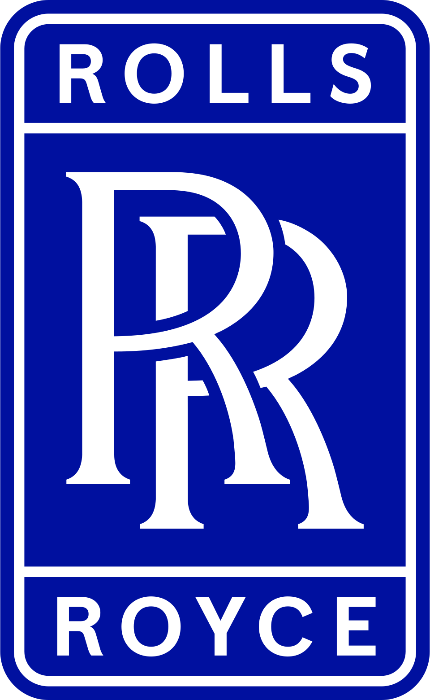

롤스로이스 홀딩스 Rolls-Royce
롤스로이스 홀딩스(Rolls-Royce)는 1906년에 설립된 영국 정부 소유의 항공기 엔진 제작회사이다. 본사는 런던에 있으며, 제너럴 일렉트릭에 이어 세계 2위의 항공기 엔진 회사이다.
최종 업데이트

롤스로이스 홀딩스는 어떤 브랜드인가
롤스로이스 홀딩스는 항공기용 엔진을 제작하는 영국의 회사이며, 본사는 런던에 있다. 영국 정부가 소유한 회사로서 제너럴 일렉트릭에 이어 세계 2위의 항공기 엔진 회사이다.
항공기용 엔진은 주로 3축 방식으로 내놓으며, 항공기용 엔진의 정비를 자사에서 받게 하는 원칙을 고수한다. 이 때문에 대한항공처럼 자체 중정비창을 보유한 항공사는 롤스로이스 홀딩스의 엔진을 아예 운용하지 않는다.
1906년 설립 당시에는 자동차와 비행기 엔진을 함께 만드는 회사였으나, 자동차 부문은 1973년에 민간에 매각되었다. 1971년에는 경영난으로 영국 정부에 의해 국유화된 이력도 있다.
롤스로이스 홀딩스는 어떻게 시작되고 성장했나
1906년 3월 15일 찰스 롤스와 헨리 로이스가 롤스로이스 유한회사(Rolls-Royce Limited)를 설립했다. 이 회사는 자동차 회사이자 비행기 엔진 회사였다.
1971년 항공기용 엔진인 롤스로이스 RB211의 개발과 관련하여 경영난을 겪었고, 영국 정부에 의해 국유화되었다. 1973년에는 영국 정부가 롤스로이스 자동차를 민간에 매각했고, 이로써 롤스로이스 plc가 분리되었다.
앞서 RB211 엔진의 출고가 지연되면서 이 엔진을 쓰는 록히드 L-1011 트라이스타의 생산에 큰 차질이 빚어졌다.
롤스로이스 홀딩스의 브랜드 아이덴티티는 무엇인가
항공기용 엔진을 주로 3축 방식으로 내놓고, 엔진 정비를 자사에서 받게 하는 원칙을 고수하는 영국의 항공기 엔진 회사이다.
롤스로이스 홀딩스는 지금 어떤 상태인가
현재 롤스로이스 홀딩스는 영국 정부 소유의 항공기 엔진 제작회사이며, 본사는 런던에 있다. 제너럴 일렉트릭에 이어 세계 2위의 항공기 엔진 회사이다.
롤스로이스 자동차는 1973년 민간에 매각된 뒤 독일의 BMW에 인수되었다.
롤스로이스 홀딩스 로고는 어떻게 변해왔나
자주 묻는 질문
롤스로이스 홀딩스는 어느 나라 브랜드인가요?
롤스로이스 홀딩스는 영국의 에너지·산업재 브랜드입니다.
롤스로이스 홀딩스는 언제 설립되었나요?
롤스로이스 홀딩스는 1906년 설립되었습니다.
롤스로이스 홀딩스의 브랜드 아이덴티티는 무엇인가요?
항공기용 엔진을 주로 3축 방식으로 내놓고, 엔진 정비를 자사에서 받게 하는 원칙을 고수하는 영국의 항공기 엔진 회사이다.
롤스로이스 홀딩스는 어느 기업이 소유하고 있나요?
현재 롤스로이스 홀딩스는 영국 정부 소유의 항공기 엔진 제작회사이며, 본사는 런던에 있다.
롤스로이스 홀딩스의 창업자는 누구인가요?
롤스로이스 홀딩스의 창업자는 Charles Rolls입니다(위키데이터 기준).
롤스로이스 홀딩스의 본사는 어디에 있나요?
롤스로이스 홀딩스의 본사는 런던에 있습니다(위키데이터 기준).
롤스로이스 홀딩스의 공식 웹사이트는 어디인가요?
롤스로이스 홀딩스의 공식 웹사이트는 https://www.rolls-royce.com/ 입니다.
출처와 검증
롤스로이스 홀딩스 관련 참고: 공식 웹사이트 · 위키데이터 Q243278 · 한국어 위키백과 · 영어 위키백과. 브랜드명은 한글과 원어를 함께 표기하되 데이터에 없는 표기는 만들지 않습니다. 기원 국가·설립연도는 검수된 정의문에서 확인된 값을 우선하고, 없을 때만 공식 웹사이트 URL이 일치하는 위키데이터 개체의 값을 씁니다. 위키데이터 값은 2026-11-12 기준입니다.